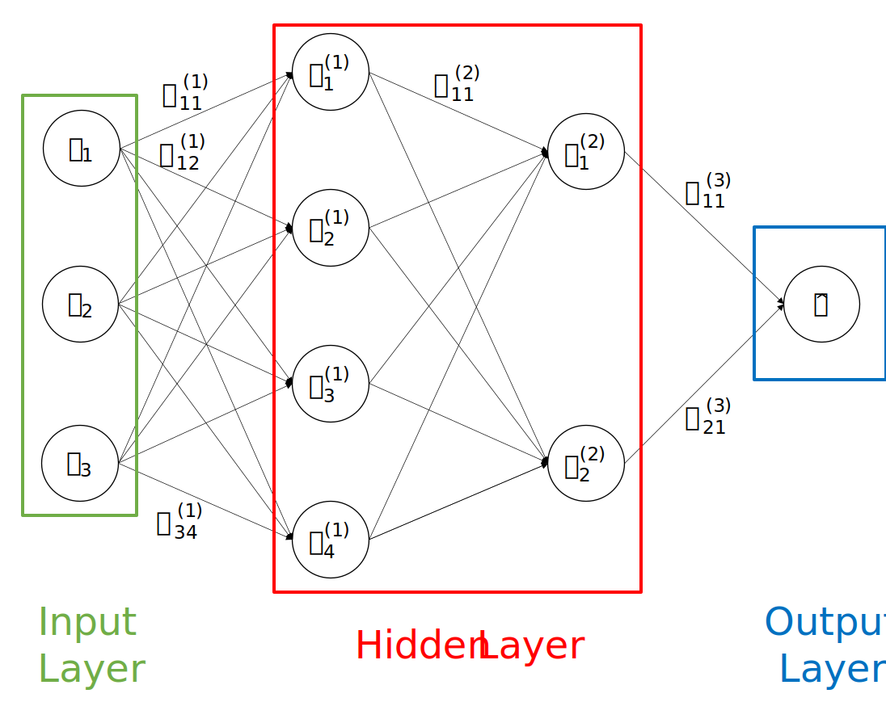

A basic overview of Machine Learning and its terminology.
What is a Neural Network?
A Neural Network (NN) is a deep learning model used to approximate some function $f$. Throught a learning algorithm it is able to recognize pattern in data. There are different types of NN depending on task that you want to solve. For example Convolution Neural Network (CNN) are often used for image classification, Recurrent Neural Network (RNN) are used for speech recognition, ecc.... From these examples you can understand that NN are often used with unstructural data (images, audio, text) that are more difficult for a computer to understand their meaning. However in this article we'll see the standard NN used more for structural data, for example for predict the house's prices from the house features.
Architeture of a Standard NN and mathematical notation
A NN is composed from layers $l$ and nodes $a$. In the figure below you see an examples of NN:

Fig.1 - A Standard NN with 4 layers.
In this example the NN has 4 layers: 1 Input Layer, 2 Hidden Layer and 1 Output Layer. Often input layer isn't considered (because the aren't computation in these nodes that contain the samples' features) so we can say that this NN has 3 layers. With $x_i$
we denote the i-th features of a sample $x$, with $a_i^{(l)}$ we denote the $i-th$ node of the layer $l$ and finally with $w_{ij}^{(l)}$ we denote the parameter used with origin into the node $i-th$ of the layer $l-1$ and with target into the node $j-th$ of the layer $l$. In the figure we have $3 \cdot 4 + 4 \cdot 2 + 2 \cdot 1 = 23$ parameters. Moreover we add a bias parameter $b$ for each nodes (except for the nodes in the input layer). So we have $23 + 4 + 2 + 1 = 30$ parameters. The formula for compute the output of each node in hidden and output layer is the following:
$$1. \quad a_j^{(l)} = g( w_{ij}^{(l)} \cdot a_i^{(l-1)} + b_j )$$
where $g()$ is the activation function of the node $a_j^{(l)}$. Now let's see how compute the output of a generic Standard NN.
Forward propagation
For computer the output for each node in a layer we must use a for loop. If the number of nodes in a layer are $100$ we must use the formula $1.$ only for this layer. So for reduce computation we can use a vectorize implemetation:
$W_j$ is a matrix of dimension $(n_l, n_{l-1})$ where $n_l$ is the number of units in the layer $l$ so $n_{l-1}$ is the number of nodes in the previous layer.
$b_j$ is a vector of dimension $(n_l,1)$.
$a_j$ is a vector of dimension $(n_l, 1)$.
For example for compute $A_1$ (see the Fig 1), the output for the first layer, we compute:
$$
\begin{bmatrix}
w_{11}^{(1)} & w_{21}^{(1)} & w_{31}^{(1)}\\
w_{12}^{(1)} & w_{22}^{(1)} & w_{32}^{(1)}\\
w_{13}^{(1)} & w_{33}^{(1)} & w_{33}^{(1)}\\
w_{14}^{(1)} & w_{24}^{(1)} & w_{34}^{(1)}\\
\end{bmatrix}
\times
\begin{bmatrix}
x_{1}\\
x_{2}\\
x_{3}\\
\end{bmatrix}
+
\begin{bmatrix}
b_{1}\\
b_{2}\\
b_{3}\\
\end{bmatrix}
$$
So we have the following formula:
$$A_1 = g(W_1 \times x + b_1)$$
Now we must apply this formula for each samples in the training set with a for loop. We can vectorize this formula further for remove this for loop. We can define $A_0$ as a matrix of dimension $(n_x, m)$ where $n_x$ is the number of features of a sample and $m$ is the number of samples. With this implementation we have:
$B_j$ is a matrix of dimension $(n_l,m)$. This matrix is obtain by repeat the vector $b_j$ m times, so the number of total parameters is $30$ again.
$A_j$ is a vector of dimension $(n_l,m)$.
So if we denote $\hat{Y} = A^L$ where $\hat{Y}$ is the matrix contain all output for each sample $x$ and $L$ is the total number of layer, $A^L$ has dimension $(n_y, m)$ where $n_y$ is the dimension of a single output. We can compute the output for the network in Fig 1 as follow:
$A_1 = g(W_1 \times A_0 + B_1)$ so $A_1$ has dimension $(4,m)$.
$A_2 = g(W_2 \times A_1 + B_2)$ so $A_2$ has dimension $(2,m)$.
$A_3 = g(W_3 \times A_2 + B_3)$ so $A_3$ has dimension $(1,m)$ because in this example the output for a generic sample $x$ has 1 dimension.
You can see that with this vectorized implementation with only 3 step (because with have 2 hidden layer plus one output layer) we have compute the output for all samples. We can now express the three previous formulas with the following generic formula:
$$2. \quad A_l = g(W_l \times A_{l-1} + B_l)$$
This formula is generic for any Standard NN with $L$ layers and with any number of nodes in each layer.
Backpropagation
Our network must learn the optimal parameter $W_l$ and $b_l$, so it is need for an algorithm that adjust this parameter based of an error. This algorithm is called backpropagation. After the network has compute the output $\hat{Y}$ it compute the loss function $L(\hat{Y}, Y)$ for compute the error between the ouput that we have compute $\hat{Y}$ and the true output $Y$ (supervised learning case). As a first approximation (without consider overfitting, ecc...) more lower is the error and more better is our network. For update our parameters, after compute the error, the backpropagation algorithm use gradient descent. Taking up the Fig 1, we can write the following rule for update our parameter:
$W_{1_{new}} = $$W_{1_{old}} - \alpha \cdot dW_1$
$b_{1_{new}} = b_{1_{old}} - \alpha \cdot db_1$
$W_{2_{new}} = W_{2_{old}} - \alpha \cdot dW_2$
$b_{2_{new}} = b_{2_{old}} - \alpha \cdot db_2$
where, for example, $dW_1$ is the derivative of the cost function $\mathcal{L}$ respect to the parameter $W_1$. $\alpha$ is the learning rate and specify the amount of update. Using the chain rule we can compute, from Fig 1:
Note: the dW at the left of the formula is respect to loss function while the dW on the right of the formula it's not.
So this is called backpropagation because we are compute from right to left, the $dW_2$ formula use a piece of the $dW_3$ and $dW_1$ formula use a piece of the $dW_2$ formula. We can express this generic formula:
$$3. \quad dW_l = \frac{ d\mathcal{L} }{ dA_L } \cdot \frac{ dA_L }{ dA_L-1 } \cdot \ ...\ \cdot \frac{ dA_{l+1} }{ dA_l } \cdot \frac{ dA_l }{ dW_l }$$
Summary
So we have seen the architecture of a standard NN and how it can "learn" to solve some tasks. The forward propagation and backpropagation step must be execute iterative so that we can reduce the error compute by the loss function. Moreover, for the first step, it is important initialize the parameters $W$ randomly otherwise the network doesn't work. So we can summarise as following:
Inizialize all parameters $W_l$ randomly (the $b_l$ can be set with zeros).
After that the neural network can execute the following steps $N$ times:
Compute the output of NN throught forward propagation.
Compute the loss.
Update the parameters $W_l$ and $b_l$ thourght the backpropagation algorithm.
This was only a taste of NN. The are many other stuff to teach: how to choose hyperparameters (number of layers, number of nodes, learning rate, activation function and number of iterations), what other neural networks exist? How can you choose the right NN? And so on. I hope that this article can help you to have a better understanding of NN.
If you found some error or there are stuff that aren't clear you can write me an email. You can find my email on my site by clicking on my name at the top of this page. Thank you!